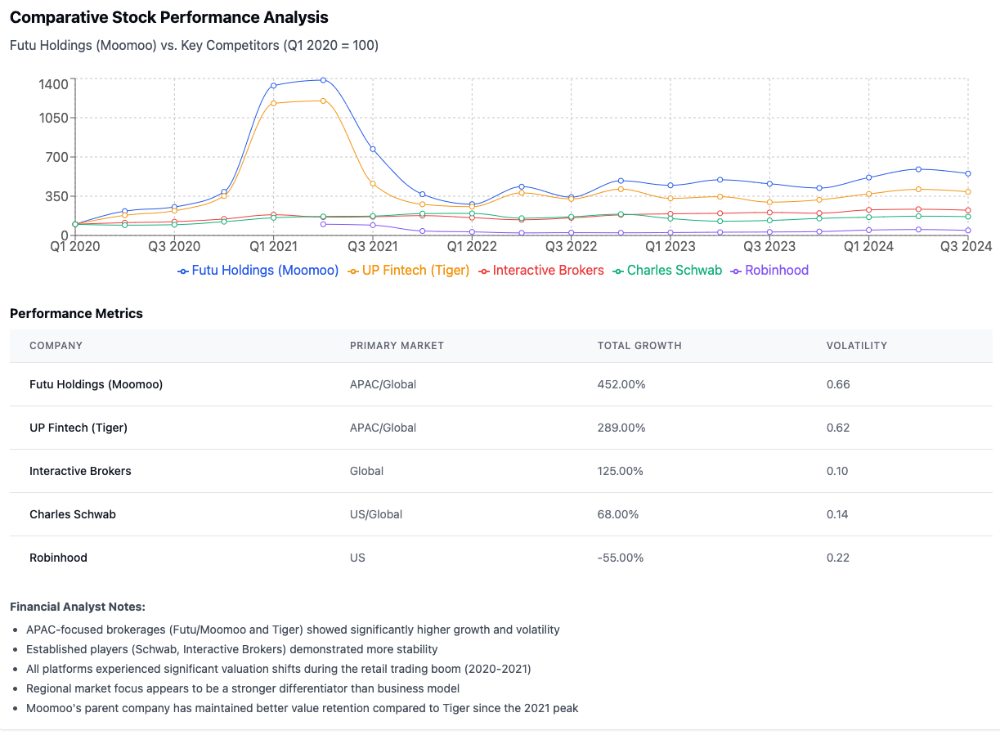

Futu in Hong Kong
Moomoo was developed by Futu Holdings Limited, a company founded in 2011 by Leaf Hua Li, a former Tencent engineer. The platform represents the international expansion of Futu’s successful Chinese trading platform “Futu Niuniu.”
In its early days, Moomoo:
- 2018: was launched initialy in the United States as Futu’s first major international expansion
- 2019: received broker-dealer registration from the U.S. Financial Industry Regulatory Authority (FINRA)
- 2019: established a strategic partnership with Interactive Brokers to provide clearing services
In this period, the company stood out by by focusing on cross-border trading capabilities, particularly for Chinese investors interested in U.S. markets, and building technological infrastructure that rivaled institutional-grade trading platforms such as Webull, E-Trade, Charles Schwab, etc.
Public Listing and Global Expansion (2019-2021)
Futu Holdings IPOed on NASDAQ in March 2019 (ticker: FUTU), which provided it strategic capital for aggressive international expansion.
Futu Holdings managed to
- March 2019: raise approximately $90 million in its IPO
- 2020: drive significant user growth during the global retail trading boom triggered by pandemic lockdowns
- Q1 2021: see its stock reach an all-time high of approximately $204, reflecting investor enthusiasm for its growth prospects
- March 2021: launched officially in Singapore, marking its entry into APAC, its largest and most important market
- August 2021: expand in Australia with the acquisition of an Australian Financial Services License
This period also established Moomoo as a serious contender in the global retail brokerage space, with technology sophistication that exceeded many established competitors. This includes multiple purpose-built systems optimized for trading performance, data analysis, and user experience while its competitors merely adapted general off-the-shelf technologies.
APAC Market Focus and Maturation (2021-2023)
Following the Chinese regulatory crackdown on technology and financial services companies in mid-2021, Moomoo accelerated its strategy to focus on APAC ex mainland China.
- Late 2021: Increased regulatory scrutiny in China led to pivoting growth strategy toward markets outside mainland China
- 2022: Rapid user acquisition in Singapore, becoming one of the country’s top trading platforms
- Early 2023: Expanded operations in Australia, gaining market share from traditional brokers
- Mid-2023: Entry into the Japanese market, targeting the country’s growing retail investor base
- 2023: Launch of enhanced wealth management features to diversify beyond trading
In this period, Moomoo evolved from primarily a trading platform to offer more comprehensive financial services, comprising expanded research tools, educational content, and community features.
Recent Developments and Current Position (2023-2025)
In recent years, Moomoo has focused on strengthening its position in existing markets (APAC - Singapore, Australia, Japan, etc.) while expanding its product offerings at the same time:
The measures include
- Late 2023: introducing advanced options trading tools to attract sophisticated retail traders
- 2024: expanding into Malaysia and other Southeast Asian markets
- 2024: integrating AI-powered investment analysis tools
- Early 2025: strengthening focus on fractional shares offering and managed portfolio solutions to attract newer investors
As of early 2025, Moomoo has positioned itself as one of the leading investment platforms in the APAC region, with particular strength in Singapore, Australia, while simultaneously expanding its presence across Southeast Asia. The core strategy of the platform is to maintain its technological edge and broadening its appeal to different investor segments at the same time.
These strategic moves have allowed Moomoo to navigate regulatory challenges, capturing new market segments across Southeast Asia and APAC as a whole, and bringing technologically superior solutions to these emergent markets.
Key Competitive Insights

Regional Focus Drives Performance Patterns
- APAC-Focused Platforms:
- Both Futu Holdings (Moomoo) and UP Fintech (Tiger) significantly outperformed traditional brokerages
- Achieved 552% and 389% growth respectively since Q1 2020
- Both companies benefited from the rapid growth of retail investing in APAC markets
- Established Global Players:
- Interactive Brokers and Charles Schwab showed more modest growth (225% and 168%)
- Demonstrated greater stability with lower volatility metrics
- Their diversified global presence provided resilience during market downturns
- US-Focused Platforms:
- Robinhood has struggled since its IPO in July 2021, currently at 45% of its initial value
- Higher regulatory scrutiny in the US market created headwinds
Competitive Differentiation
- Moomoo vs. Tiger (Primary APAC Competitor):
- Moomoo has maintained better value retention (552% vs. 389%) since Q1 2020
- Both experienced similar boom-bust cycles, but Moomoo demonstrated stronger recovery
- Moomoo’s technology-focused approach and expansion strategy appear to be providing a competitive edge
- Moomoo vs. Global Players:
- Moomoo shows higher growth potential but with significantly higher volatility
- Global players like Interactive Brokers offer more stability but lower upside
- Moomoo’s focus on specific APAC markets creates both opportunity and concentration risk
Market Cycle Analysis
- Retail Trading Boom (2020-2021):
- All platforms saw significant valuation increases
- APAC-focused platforms experienced the most dramatic growth
- Moomoo reached 1,336% of its Q1 2020 value by Q1 2021
- Correction Phase (Mid-2021):
- Chinese regulatory crackdowns disproportionately affected APAC-focused platforms
- Moomoo and Tiger experienced steeper declines than global competitors
- Stabilization and Recovery (2022-2024):
- Moomoo has shown stronger recovery compared to Tiger
- Both APAC platforms have maintained significant outperformance versus traditional brokerages
Investment Implications
- Moomoo’s Competitive Position:
- Strongest performer in the APAC-focused segment
- Successfully navigated regulatory challenges better than direct competitors
- Growth trajectory suggests continued market share gains in the region
- Forward-Looking Considerations:
- Moomoo’s continued expansion into new APAC markets offers growth potential
- Higher volatility suggests need for careful timing and risk management
- Regulatory developments in China and other APAC markets remain critical factors